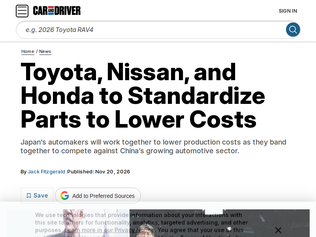
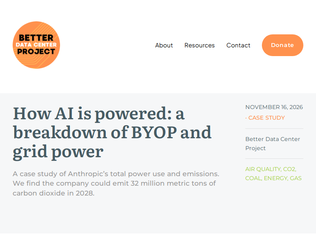
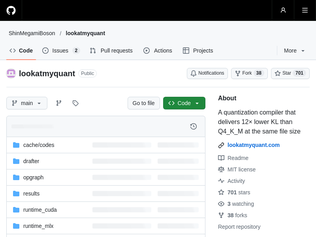
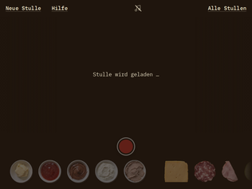
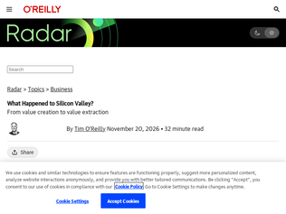
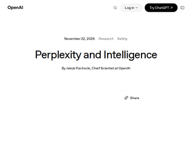
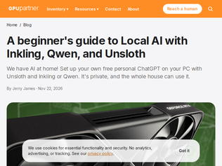
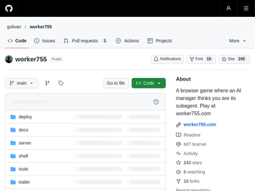

"Ford and GM have been doing this since 2002 with the GM–Ford 6-speed automatic transmission [0]. The companies worked together on the design and ultimately worked with Allison Transmission on its manufacture.One key difference between each company's implementation had to do with the shifting solenoids and the electronics. But as far as I know the actual clutch pads and gearing were the same.[0]: https://en.wikipedia.org/wiki/GM%E2%80%93Ford_6-speed_automa..."
"They’re (the Japanese makers) are getting cooked by the Chinese makers like BYD who make 75%-85% of their parts in-house[1].Depending on the car, some estimates say that only the windows and tires are the only pieces that come from outside suppliers.[1] https://www.electrichybridvehicletechnology.com/features/fea..."
"Makes sense, it's probably the only way they can actually compete with Chinese car manufacturers.I feel like the title is misleading on the impact, it's actually all of the big players> The push to simplify and lower costs comes as Japan’s seven automakers, including Toyota, Nissan, Honda, Mazda, Subaru, Mitsubishi, and Suzuki, work to fend off the increasingly competitive list of Chinese automaker"

"Anthropic is a legitimately bad actor here, particularly in leasing Colossus 1 given the local pollution it has caused in Memphis. It is particularly shocking that they've made no renewable commitments in the US - Alphabet has made so many, and has a huge team on this! Just clearly not a priority, and they should be shamed and pressured. They know better."
"This is why we need regulation. Without rules, the cost of the externalities is passed on entirely to communities very far from leadership decision makers or shareholders.The problem with a purely financial accounting is it ignores environmental and social costs entirely."
"The scale of energy that AI data centres use is huge in a way that most people don't have the ability to visualize. They think of a computer that their cat likes to sit on and multiply that gentle warmth by some number in their head. This is completely unrealistic.Here's a quote about a data centre currently being built near Edmonton, Alberta.------"Utah State University physicist Robert Davies was hired by SLCN to conduct a preliminary technical assessment. He said if the Wonder Valley project goes ahead it would release the equivalent of 23 atomic bombs of energy every day, though he noted the comparison has its limits."Source: https://www.cbc.ca/news/canada/edmonton/wonder-valley-slcn-c...------This is not the total energy being consumed by this data centre. It's merely the waste heat it will release to the surrounding environment.Here's the energy consumption:------"At full operation, it would consume energy at a continuous rate of 18 gigawatts or about 1.5 petajoules per day and emit about 30 million tonnes of carbon dioxide a year – more than four per cent of Canada’s total emissions, said Davies, whose assessment was based on publicly available information."------That's the equivalent of 1.66 million Canadians in carbon emissions, or 1.6 Edmontons. This is just one data centre. Many more are going up across Canada, and Canada is both late and slow to the buildout.That's the kind of scale we're dealing with at a time when, as a world, we are trying to reduce our carbon emissions."

"If you're new to quantized models: Don't get too excited about claims of fitting large models into tiny RAM footprints from random GitHub repos. There is always a tradeoff, and it's too easy to benchmaxx KL-divergence numbers and even single benchmark scores. Just because you can get something to run on a device doesn't mean it's going to be useful. The headline claim of this repo (12X better) doesn't even apply to Inkling-2-MiniThis repo's README is a mess of different histories as the author bounces from one popular model to the next. It refers to vague things like "the 1.2GB file" that probably made sense in an early vibecoding pass, but are now lost after the repo has been pushed around to different popular models.The truth is that random GitHub repos with messy READMEs almost never hold a real secret that the mainstream quantizations have missed. I would recommend sticking to mainstream quantizations like the official GGML release, Unsloth's quants, or the more well known community quantizers like bartowski or AesSedai. They typically follow an optimized size-quality tradeoff so you can find the one that fits your needs.When you see a repo like this where everything is so obviously vibecoded that the README is a rambling mix of projects and claims, you should probably go looking for a more authoritative source. The local LLM communities get spammed with 10 of these types of projects per day but I have yet to see a real breakthrough come from any of the vibecoded ones. The real work is coming from people who study this and have compute to test at scale or work on implementing advanced techniques which require inference engine support, like trellis quants."
"I tried inkling-2-mini with high thinking. It's a good model, though it does have tendency to over think but if you instruct it right it gets the job done.I tested with some tasks i usually assign to the qwen 3.8 27b, for example setup a grafana dashboard for a service i just setup. It did it beautifully.I'll do some more testing to see how it performs. This thing is doing 150 tok / s on my hardware which is 2x A4500 with NVLink.I had to do some custom kernel to make it work namely INT8 kv cache. The setup i used is documented here:https://github.com/zacksiri/llm-lab"
"Our future hinges on the capability gap between frontier lab models and open source local models"

"I really should share my work more often. I have a similar experience named “World’s Best Sandwich”:https://www.coreykozarski.com/sandwich/"
"Toast Bär-Kiwi: https://stulle.app/16617In honor of my favourite Wikipedia photo: https://en.wikipedia.org/wiki/Toast_Hawaii"
"I wish you could make the complete sandwich with bread on top, and then allow you to cut it in two."

"It’s a long article, and the most important idea is buried towards the end:> That’s where I come back to the idea of mechanism design as reverse game theory. Rather than asking ourselves the rules of the game we are now playing, it calls us to ask “What game ought we to be playing?” And that question leads me imperatively to my answer: “The game of human flourishing.”I wholeheartedly agree: we should think way harder about what we want humanity to optimize for collectively, rather than keeping it haphazard.The current economic system is built on the idea of ‘shareholder value maximisation’, which, in a finite world, will ultimately become simply ‘value extraction’. With AI, we’ve built an automated value extractor, which can extract value even faster than was done before. Because of that, the old model can no longer work for improving human flourishing — in a finite world, it will inevitably lead to economic accumulation by few entities, throttling the economic flow."
"Attempts at governance are futile until we recognize that we have built a machine and set it on its course. Instead, we pretend that the market is a natural phenomenon best left alone, and we fail to hold its mechanism designers to account. We need to tear down and rebuild that machine, reprogramming it so that human flourishing, not corporate profit, becomes its goal.This article has useful insights. It points out that capitalism is an optimization engine for something. Shareholder value and CEO compensation, mostly. It reminds us of something that many people would prefer be forgotten - capitalism operates under rules set by governments, and those shape the market. Tax law matters - what's deductible warps spending patterns. Bankruptcy law matters - who gets left holding the bag? Corporation law matters - how immune are executives from the consequences of their decisions? Labor law matters - do people go to jail for wage and hour law violations?All of those are changeable by legislation. Most have become much more favorable to companies since 1970. That's not necessarily permanent. We had a New Deal in the 1930s, following the Gilded Age of the 1920s and the crash of 1929."
"I don't disagree with anything O'Reilly is saying but lets also call out the proximate cause which is that ZIRP era allowed these companies to grow to grotesque proportions and incentivized upstarts to shoot big in green fields rather than compete in known markets. Now interest rates are back and tech companies are cannibalizing their core competencies on the back of AI. Will markets begin slapping wrists for reckless spending and will upstarts see weakness and stab at exposed bellies? No guarantee they will but it is more possible than analysts are realizing."

"Perplexity is not defined in the article. FYI:Perplexity is the degree of surprise the model has in predicting the next token, over a sequence of tokens. At the worst case, perplexity is equal to the size of the vocabulary. At the best case, perplexity is 1.So, given a sequence of tokens, "e = m c ^ 2", if the p(token | prev tokens) = 1 for every token, perplexity ends up being 1. If, however, it's a random predictor, the p(token | prev tokens) is 1/vocab for every token, and perplexity ends up being len(vocab).The article plots log(perplexity) on the y-axis, which puts the best case at 0 (i.e. log 1)."
"This trend is pretty shocking to me. I assumed that we had moved beyond cross-entropy loss being important with the increasing use of RL, it's wild that the trend is so clear. Really nice to have such a simple benchmark instead of the increasingly convoluted ones that are getting spun up every day.Also, I wonder what happened with GPT 4.5? I think o1 was the start of true reasoning models, right? I was using Claude at the time so I can't remember."
"The perplexity / intelligence correspondence is one of those ideas that is surprising at first, but in retrospect could not work any other way. The "magic" of intelligence is the ability to extract sophisticated world models from large volumes of raw sensor data. The prediction (=compression) rate on the raw data stream is exactly the metric that captures this progress.I argued this point in a 2008 paper: https://link.springer.com/chapter/10.1007/978-3-540-69134-1_...I elaborated on this idea in my 2011 book: https://arxiv.org/abs/1104.5466I used the word "reusability" to express the idea that the world models obtained via the large scale data compression task could be repurposed for other tasks.(So, Burfoot, if you were so prescient, why aren't you a rich and famous frontier lab researcher? The answer is: I did not think neural nets would scale up)."
"While we are commenting on anything but the birds: I really wish games like this had some kind of co-play available. Would seem to fit the narrative to have one partner play Jason and the other play Lucia (or some otherwise NPC friend when they are apart). It would make it much more engaging to play with family/ friendsFor context, I just bought this and have been passing the controller back and forth with my adult son all weekend"
"The game appears to be mostly story/character focused rather than sandbox focused, despite the insane attention to detail on traditional sandbox elements (for context, I've already completed the main campaign). In a lot of ways it feels like two disjoint teams worked to create the final product and the story/character team won out. Not sure if that's ultimately the root cause of the stated inconsistencies, but it could be a contributing factor."
"My absolute favorite mod of all time was the one that allows you to be the wild life in Red Dead Redemption 2.https://www.youtube.com/watch?v=5X-6hEGapv0Seeing how much detail they put into that, I am hyped to see what they do with GTA6."

"This is the plasma TV phase of local AI.Early, heavy and priced premium. I estimate it will take ~5 years for most practical AI to run on our own machines, with a few super brains left in the cloud.I have been putting some effort into making local AI as consumer friendly as possible on macOS with this project https://github.com/pdparchitect/noodle/ but I will be the first to admit that the hardware you need is beyond most people's budgets. Hell, perhaps beyond most enterprises comfort levels too.For now, subscriptions are the most practical way in."
"The Nvidia P40 is a good way to play with local AI while not spending thousands of dollars.The card goes for about 300 USD on Ebay and it gives you 24GB of GDDR5. See this for the particulars of setting it up because it's not quite plug and play.https://github.com/JingShing/How-to-use-tesla-p40I'm running Qwen 3.8 27B UD-Q4_K_M at 14t/s with llama.cpp on Ubuntu and it's very useful, not just a toy."
"You don't need a $5k RTX 5090 for this. Lots of people run workable quants of Qwen3.8-Flash-Next on 16GB VRAM or even 12GB cards with Strata or Basalt that offload MoE layers to system RAM.You can get a Dell T5820 with 64GB RAM for $600, throw in a Tesla P100 16GB VRAM GPU for another $250, add in some SSD and an aftermarket GPU fan, and you're up and running with a very capable model at 30 tok/s for <$1k in hardware."
"Thank you! I'd love to see a playback speed setting (e.g. 1.25x) that lets me catch up with the live stream without missing any content. Once I catch up to live, playback automatically switches back to 1x."
"They stream this from the Internet Archive directly. How do they feel about a different UI like this that bypasses their own user experience. I wonder whether they care."
"The channel names are fantastic. "Meddling kids" is just a perfect name for a cartoon channel."

"I like the idea of this! I can't see the plot in yours (beyond Dan's home folder risks).Perhaps there's a version of this where it becomes clear from the files/ agent tasks that you're covering up a crime, or you have to try and piece together a mystery while still getting tasks done, convincing the tasking AI you need access to folder X...Anyway thanks for sharing the idea."
"Looks pretty good and is quite fun to play, but for some reason the manager always told me the exact commands to achieve the tasks instead of just letting me do them by myself. I couldn't tell whether there was a specific option to take on the challenge on my own, as the demo on GitHub showcases."
"Butlerian Jihad Now"
Toyota, Nissan, and Honda to standardize parts to lower costs
"Ford and GM have been doing this since 2002 with the GM–Ford 6-speed automatic transmission [0]. The companies worked together on the design and ultimately worked with Allison Transmission on its manufacture.One key difference between each company's implementation had to do with the shifting solenoids and the electronics. But as far as I know the actual clutch pads and gearing were the same.[0]: https://en.wikipedia.org/wiki/GM%E2%80%93Ford_6-speed_automa..."
"They’re (the Japanese makers) are getting cooked by the Chinese makers like BYD who make 75%-85% of their parts in-house[1].Depending on the car, some estimates say that only the windows and tires are the only pieces that come from outside suppliers.[1] https://www.electrichybridvehicletechnology.com/features/fea..."
"Makes sense, it's probably the only way they can actually compete with Chinese car manufacturers.I feel like the title is misleading on the impact, it's actually all of the big players> The push to simplify and lower costs comes as Japan’s seven automakers, including Toyota, Nissan, Honda, Mazda, Subaru, Mitsubishi, and Suzuki, work to fend off the increasingly competitive list of Chinese automaker"